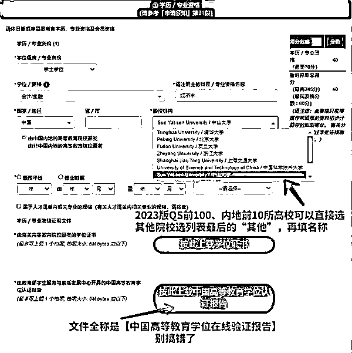
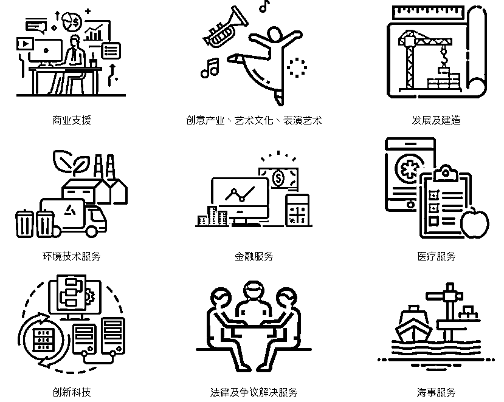
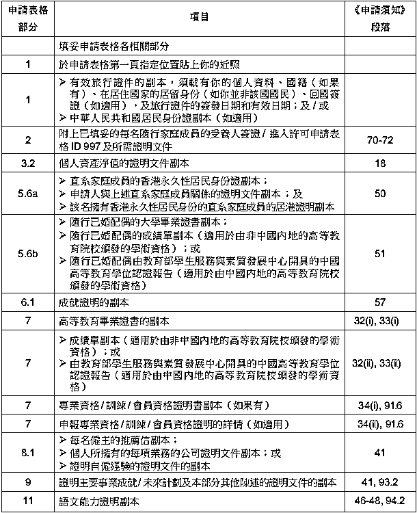
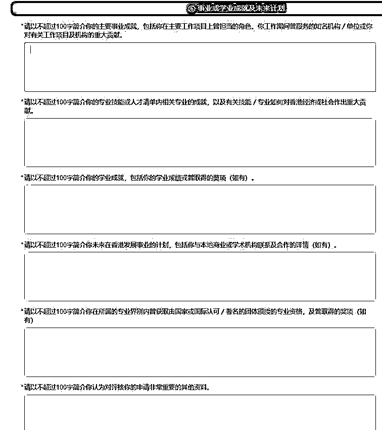
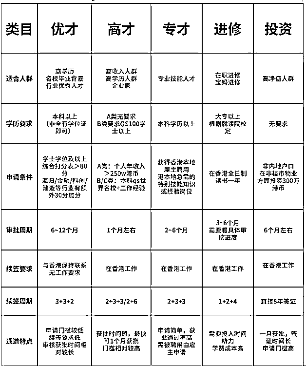

来源：https://sbu67xqbm4.feishu.cn/docx/YKkgd4xU3oKBquxeFBDcsPj4nCc
很久没写东西了，端午节在家写一篇证明我还在生财。
去年10月DIY申请的香港优才，今年3月通过，上个月刚刚办完身份证，小结一下，和老板们分享一下，作为参考。香港身份对老板们搞钱还是有很多好处的。
目录：
0、瞎BB
1、DIY 优才申请流水账
2、香港优才条件、自测与申请材料
3、别跟风，香港身份有什么用途
4、除了优才，还有哪些获得身份的方法
5、拿到身份只是起点，如何维持临时身份
6、真的要找中介吗？
先BB一下，我申请香港身份的目的，主要基于2点，第一点是给孩子升学 Plan B，毕竟香港升学比大陆容易，还是很有吸引力的（后面细说），第二点，我是做跨境电商的，需要收单和结汇，很多业务，尤其是服务贸易的钱比较不太容易结汇（这个以后有机会聊），而且香港身份的税收相对来说较少，可以节省一点。为什么不考虑坡县或者其他国家，一是香港离家较近，二是还是有一些国家情结，毕竟香港还是中国。
2023年5月开始准备。花一个月时间，加了大陆和香港的很多中介，发现中介只能给我带来2个作用，一是信息差，二是可能帮我找符合香港紧缺专业的特点，据此来润色文书，写小作文。自我评估了一下，特色也不多，只能拼硬性条件，遂放弃中介。
2023年6月，决定自己DIY，开始准备材料。因为工作年限较久了，所以准备的材料太多，需要每个前雇主的工作证明盖章。这里比较烦，因为早年在电网，国企的作风大家都知道的，一个工作证明也不给盖章，来来回回安徽几趟battle了多次。如果不是因为海外工作、名企加分都在这里，我就用社保代替了。其他公司就简单很多，直接联系前公司或者用社保替代，这些都是中介替代不了的。之所以这么搞，是因为文书不能投机取巧，不能造假，在香港，造假文书是要进监狱的。
2023年7月，把所有的材料扫描电子档，准备小作文，准备提交，然后infp的拖延症犯了。
2023年8月，优才申请改革，上线新系统，不能自己打分，系统按照提交的资料自动评分；不能再写文书小作文了，改成几段按要求写各100字的陈述，中介的小作文优势基本无用了。简单了抄了小红书上的模板，大多是吹NB、彩虹屁之类的。
2023年10月，等自己的AI图书出版后，提交资料。然后就是等待。
2024年3月，邮箱收到审核通过邮件。准备并提交雇主赴港同意书（就一张纸，公司盖章即可）。
2024年4月，间隔20天左右收到香港3年签注许可，要求3个月以内也就是7月前入境激活。打印签证许可，去进出入境办签注。
2024年5月，6-1儿童节期间去香港办理身份证，香港海关记录并激活优才签注，拿到身份证行街纸（临时身份证）。
2024年6月，拿到身份证。
申请过程全部DIY，最耗时部分在准备材料的时候。
贴上港府入境处优才申请网站链接和港府优才的文档，写的很详细，我捡重点写一点。
申请链接: https://www.immd.gov.hk/hks/services/visas/quality_migrant_admission_scheme.html
申请文档：https://www.immd.gov.hk/hks/forms/forms/id-c-982.html
其实没啥条件好说的，对于普通人来说，就是按积分表打分，满分245分，80分合格，能通过审核就行。一般来说，能跟香港紧缺人才（https://www.talentlist.gov.hk/sc/）沾上边，基本问题不大。占不上边的话，就往上靠好了。一般来说，很多人都说120分以上相对来说有点保障。
可以带配偶和18岁以下子女（有额外加分）。
自测打分表
https://www.immd.gov.hk/hks/services/visas/quality-migrant-admission/self-assessment-tool.html
表格中有几点特殊点：
1、著名院校加分一般是Q S、上海交通大学、泰晤士高等教育及美国新闻与世界报道发表的四个全球大学排名表之一的前100所大学，成人、自考和非全是认可的，只要有学位证。在申请过程中，大陆的几个大学是单列出来的，选择就可以了。

2、2年以上海外工作经验，需要工作签，可以把以前过期的护照和工作签证找出来，如果丢失的话，需要找前雇主证明，以及海关记录证明（小程序“移民局”可以打出来个人所有的出入境信息）。
3、知名企业，除了500强以外，全资国企或100%控股的国企子公司也可以。我前雇主就是国企，国家电网子公司，后来改制为中国能建，问题也不大，去国家企业信用信息公示系统（https://www.gsxt.gov.cn/index.html）打印出来工商登记信息就可以了。
4、人才清单有点难度，自己拿大学的专业和工作经历往上靠，然后自证。实在靠不上，或者无法自证，就只能放弃这个加分，然后还是要往上靠，争取审核员的感情分。
5、外语得分，英语的话一般是托福雅思，此外就是海外院校的学习经历，如果能证明工作语言是英文，例如外企或者外贸业务，也可以，把工作资料，往来邮件打印一下就行。其他语言，同此。
6、最后一点，是高级职位，这一点是大部分人都自以为可以拿到，实际上是最难的部分，虽然入境处没有明确说明公司领导层和老板在营收、公司人数和下属人数上有什么硬性要求，但是据坊间传闻，一般公司营业额1亿港元，公司员工100人，下属人数30人同时满足才能加分。我个人是直接放弃了。

老板们可以自己据此自我评估看一下，虽然分数比较重要，不过香港严重缺人，对于人才清单中的专业，只要是并且可以证明，那么80分也可以很容易通过。反之，高分也不一定的。也可以进到上面港府的网站上自测，更准确一点。
表格右侧是我自己自测的分数，可以说既不是人才，也没有高管经历，总分还可以，还是有点危险，为了往上靠，我做了2个动作。关于高管经历，虽然放弃了得分，不过名下确实是有几家公司，把公司和经验流水提交上去，用以说明确实有公司管理经验。关于人才紧缺专业，也放弃了得分，不过据我所知，香港因为地方小，实体经济较难发展，所以在三产上是重投资的，比如金融、IT（尤其是AI）、Blockchain、创意创新、ESG、港口建设这些都是倾斜的。我其中一个专业是信息管理与信息系统，偏IT，写了一本AI在跨境业务上应用的图书《人人都能玩赚跨境电商，ai实战宝典跨境一本通》，所以可能会在审核过程中有一定的情感加分，不过也不知道，总胜过没有。
申请材料都是为了自证以上表格的得分的，而且在申请过程中都是提示要上传哪些，所以大体上还是很好准备，无非就是工作年限越长，资料越多，整理起来越烦。

1、申请表格
①优才计划申请表格id(c)981，在线网申，不需要准备；
②受养人来港居留申请表ID997，在线网申，不需要准备；
③每位申请人- 纯白底彩照电子版 (大小50*40mm，或者两寸)
2、家庭成员基本资料
①港澳通行证正反面复印件(至少3年半以上有效期内，因为优才第一次签注是3年，所以办理签注时，进出入境会看，少于3年，会需要重办通行证，去签注的时候，进出入境会多次核对，我的没问题，所以没试过会不会很麻烦)
②内地身份证正反面
③主申请人为持证人的结婚证
④家庭户口簿(只需要个人信息页)
⑤儿童出生证明
3、教育背景（主申请人与受养人都需要提供）
①本科毕业证、学位证
②学士学位的中国学位认证报告
③研究生毕业证、学位证
④研究生学位的中国学位认证报告打印件内地学历:毕业证+学位认证报告
如果是国外学历，毕业证+留服认证+成绩单
学信网的学位认证对于2009年以前毕业的不友好，显示不出来，需要学位网向学校的图书馆/档案室发函查询，整个审核时限约为18个工作日（如遇毕业学校寒暑假，审核时限延长，我就是那个倒霉催的）。
4、工作证明材料
① 推荐信/ReferenceLetter
一般以在职/离职证明的形式体现，如果开不出来，可以自己写一个文档，例如公司倒闭了，然后用社保或公积金证明和工作期间的材料（例如往来邮件，工作文档之类）辅助证明
- 内容包括:
(1)雇主名称及联络资料
(2)申请人于该公司担任的职位的开始和结束时间
(3)职位头衔
(4)担任职位的职务与职责。
需要注意：
② 公司财务状况。公司一般都不会提供，上市公司直接去下载公开数据，一般公司去下载公司年报即可。
③ 组织架构图。如果是高管，需要提供，说明职位级别、公司职员总人数、个人下属员工人数等，尽量盖章。
④ 工作签证与进出入境证明，证明海外2年以上工作经验。
5、学业与事业成就
①读书期间所获奖项证明、专业资格证明文件，比如学术论文、专利、学术竞赛证书等
②证书，包括荣誉证书、CFA证书、CPA证书等
6、资产能力证明
去银行开一个存款证明就可以了（配偶的也可以）
一个人12万，家庭的话30-50万，证明足够一家人在港一年生活费。
(虽然也可以提供房产证、按揭房贷合同、公司股权、股票/债券等等，尽量以不麻烦为前提，银行现金不足，可以尝试)。
7、语言能力说明
①近2年托福雅思成绩单
②海外学院成绩单，或能证明实际工作语言为英文工作文件（例如往来英文邮件、英文文档、合同、海外雇主等等）
四六级成绩、专四、专八并不认可，没有上面的材料是无法加上英语分的。
8、个人陈述赴港计划
填写表格最重要的部分在个人的陈述上，23年8月之前没有这么详细的，就是小作文。改到线上后，为了减少审核时间，港府规定了几个方向，所以小作文的发挥空间没有了。这个表其实就几点，1-总结自己学业和工作上最突出的点，2-自己的专业和工作经历对香港会有什么贡献，一般体现上人才专业上，3-在学术上有研究突破，比如核心期刊上发表论文或者比赛上有什么奖项，4-假如通过审核，有什么计划，还是强调自己的学业或工作经历上，可以给香港带来什么贡献，5-重大荣誉，只要有就写，大小荣誉都写上，管他呢，6-补充说明，有没有都写，什么三好学生，公司奖励，都写，或者表一下忠心。
主打一个，我是对香港有用的，绝不是去占便宜的。

9、赴港同意书
入境处审核通过后，会将赴港居留同意书作为附件，连同批准通知书一起发给你，所以无需网上找模板。赴港居留同意书一般由你现任职单位盖章。
如果在优才申请期间，工作发生变动，现时在职单位与申请表所填报的最后工作单位不同，那你需要补充提交新单位的工作证明文件给入境处，然后再由新工作单位为你开具赴港居留同意书。
对于某些国有单位，可能开不出来，如果档案在其他地方，可以由档案保管单位盖章。
10、其他：保留入港小白条和签注许可（打印并随身携带）。身份通过后，入港激活身份时需要注意的点，不在申请资料范围内，仅提醒。
港澳通行证 - 60元
优才签注许可 - 230港币
港澳通行证D签签注 - 120元（好像是，记不清了）
第一次办身份证 - 0 元，补办370港币
路费 -
用途也不多，挑几点说，结合自己的需求，没需求就别搞了。
1、纯粹想在香港工作生活，没毛病，没什么好说的。拿到身份后，过去找工作生活或者开公司就行了。如果是想拿护照，就得熬过7年至少续签2次转永居，并且放弃大陆身份。
2、买房贷款利率很便宜，银行存款利率比大陆高很多，保险投资收益率比大陆高很多，买港股美股简单，没有外汇管制，对于做海外业务的老板比较友好。
3、养老和RUN。HK养老有点扯了，不过确实有人提，就发表一下自己的看法，香港养老环境不太好吧，对比大陆，居住条件差，生活成本高，唯一好一点的可能在医疗条件上，只要有钱，私立医院的医疗条件没得说的，公立的就不要说了，比大陆差多了吧。不过，有人通过香港身份作为跳板RUN去其他国家养老，就比较容易，例如英联邦国家大多对香港护照持有者有较低的门槛，例如加拿大的HONG KONG PATHWAY。很多HK永居持有多本护照等等，似乎被默许了(中国国籍持有外国绿卡，能申领香港护照的。如果已经是外国籍了，正常情况是无法申请香港护照)。
4、升学
这个应该可以占一半吧。大部分人看重的还是大学升学，临时身份（只要在报考前拿到身份证就可以了）可以参加香港高考DSE考试，DSE考试是全球认可的，可以用简体中文答题，应该是没有其他考试类型可以比的，难易程度当然看孩子的个人能力的，不用说，想考好肯定是卷的，DSE香港本地八大录取率34%，一部分凭DSE成绩申请海外院校和大陆院校（DSE五分制，大陆院校除了C9全5分外，其他学校都在4分以下，最低的暨南和华侨大学全2分，回大陆读要求永居，放弃大陆身份）。不过，一般头部学生都是出国，腰部以下的学生考香港本地还是相对有一定的录取率的。如果愿意放弃大陆身份，7年后转永居，拿回乡证，可以参加被吹上天的华侨生联考以及高校针对港澳台学生的自主招生，也是一条路。
除了孩子升学之外，申请人和配偶自己读书的话，可以以香港本地人身份获得很多优惠，例如本科和一年制水硕，本地生只需要4W，是海外生的1/4。研究型硕士和博士，学费全免，还有港府给18000每月的补贴，不需要申请，每个人都有。毕业随便拿上海和北京户口，水硕也可以，港三/QS50申报上海户口甚至不用等，立马可取，北京三个月可取。不过，哪一种身份算本地生，教育局和各个大学各有定义。贴一下香港教育局的本地生定义。
所以，优才是，高才、专才不是，但是高才专才的受养人是。
5、税务或业务。
香港的经济还是比较特殊的，在企业和个人税收上相对大陆来说都是较为实惠的。有香港身份，可以做一定的减税，这里不详细聊，做海外业务的老板，可以一起探讨。
找了2篇文章关于个人和企业纳税文章，老板们参考一下
https://short-link.me/FBeP
https://www.hkdiy.cn/article/details/1066
除此之外，做海外业务的话，我们都知道，很多业务是不对大陆身份开放的，例如收单平台strip, sqaure, 2checkout之类，电商平台etsy、亚马逊merch等等，PP 1000港币以上免费入账，美金收到任何地方都是收35美金的入账手续费，虚拟货币在香港合法，可以兑换成法定货币入账等等，有香港身份就可以很容易以个人或者企业的身份去实现。
不过，香港的银行和身份信息和大陆都是打通的，如果有灰色想法，就不要了，完全通不过的。
除此之外，临时身份和永居的差异只体现在护照、选举权、公务员考试、公屋资格等等，差异不是很多。不过，缺点也很明显，作为外来者，融入当地环境还是挺难的，本地的高房价高物价都很无语，而且临时身份最大的问题是续签，优才的签注时长一般是3+3+2，每次续签都要审核决定续签的年数，对于不常住香港的人来说，考验不小。如果你决定住那，那就当我没说，续签就不是问题。
注：有老板问，海外资金怎么到港，回大陆，出大陆，这里不讨论，如果和我一样做海外业务的话，回聊。简单提一下怎么办港卡，香港银行已经对大陆开放，自己飞过去办一张就行了，不需要任何中介，主流推荐办中银香港（无损与大陆中行/兴业寰宇人生资金往来）和汇丰，还可以申请一个虚拟银行众安银行（可开港股美股），不过都要过关才行，提前在中银香港和汇丰香港公众号预约，中银香港如果约不到可以过关后在线申请，寄到大陆你家。信用卡最简单的是汇丰，搬砖10K，就可以在线申请，寄到大陆你家，如果有身份证，可以随时申请，没有任何限制。
简单罗列了一下。
| 申请条件 | 难易 | |
|---|---|---|
| 优才 | 积分制，分够且对港有用就可以 | 时间最长，5个月打底，签注限制最少，与本地身份差异不大，工作是否无所谓，相对还算简单 |
| 高才 | QS前一百大学毕业 | 门槛最高，审核极快，1个月搞定 |
| 专才 | 找到雇主 | 原则上不能换雇主，2个月拿到 |
| 学签 | 全日制读书，拿学生签证，毕业后拿IANG签证留港 | 相对来说最简单，香港排名靠后的大学有的连英文都不考核，有的班全部大陆生，水硕只用读一年，成本估计在20-30多W，一般3-6个月 |
| 受养人或依亲 | 父母、子女或配偶是香港永居或香港身份 | 简单 |
| 投资 | 3000W港币投资，股票基金债券都可以 | 老板们搬砖就行 |
所以，现在做香港身份的中介基本就做以上这些，老板们看看这些能动手的基本不用找中介，自己申请就可以了，当然了，懒得弄是另外一回事。上面除了依亲，其他的都可以带孩子去港读书，带受养人。
找了一个网上的对比图，挺详细的，参考一下。

注：图中投资条件已改，要求3000W港币
入境处给的续签要求就一点 - 申请人连续通常性居住。
香港入境处对“通常居住”的定义为：任何人如果是合法、自愿和以定居为目的而在香港居住（例如读书、工作或居留等），不论时间长短，他/她会被视为通常居住在香港。如果他/她只是暂时不在香港，仍会被视为是通常居住在香港。
关于是否已不再通常居住在香港的问题，须视乎其个人情况及其不在香港的情况，包括：
①不在香港的原因、期间及次数；
②是否在香港有惯常住所；
③是否受雇于香港公司；
④主要家庭成员（配偶及未成年子女）的所在。
所以，入境处其实并没有明确要求申请人必须要在香港待够多长时间，而是更看重申请人是否有足够合理的资料证明你同香港有所联系，续签就可以成功。受养人完全不考核，对申请人续签也没多大贡献。只要申请人通过，受养人就可以通过。
我的理解是，只要工作，纳税，交强基金，隔几个月去一次，问题不大。如果租/买房、受养人长期在港肯定加分。
总结一下较简单的几种方式：
1、香港公司在职，有符合优高专才工资水平的流水，例如平均一个月 15-30K 港币以上，最好可以外派远程工作，例如web3, 保险之类，几个月过一次港（不超过180天），哪怕是从深圳任意一个口岸过去喝一杯咖啡再回来。
2、自雇或开一个公司，需要租场地、雇3个以上永居雇员，公司正常业务流水，还有处理法律事务、报税年检等等，几个月去一次，频率同上。
3、优才的话，在港租/买房，自己（和受养人）在港读书生活（优才读书也行，毕竟读研究生港府还给18K月薪），自己随便干点啥都行，只要合法收入能维持家庭开支就行。
不要挂靠，容易团灭，坐牢。
我自己肯定挑最简单的方式，虽然有注册香港的公司，但是不会走这条，比较烦。
申请过程基本上用处不大，因为所有的资料都只能靠自己准备，中介在申请过程中的唯一的作用就是帮你认清自己，拿你的优点去往港府的要求上去靠，比如人才清单。如果分数很高了，就基本上不需要的，拍点彩虹P还是容易过的，如果自测分数在120以下，可以找好一点的中介帮忙。不过大多数中介，90%以上吧，都主打一个，过不过你都要交咨询费的。就算退80%，我也还能赚20%，毕竟只有人工成本，也没啥好做的，唯手熟尔，不要听他自吹自擂“我是专业的”。从哪儿找，我不知道，自己想办法。至于申请人是啥条件，往上面的表格上套好了，有钱的做投资，有工作能力的，走专才，个人条件稍好一点，走高才或优才，啥也没有但是有时间的，去读个书。你要说，我都不符合，也没有20W读书钱，那就歇了吧。
我认为中介的最大作用在于拿到身份后的续签咨询。这个没办法，毕竟至少7年才能永居，除了投资移民，其他的至少续签2次，搞不好中间就断了。如果上一章列的几点不能满足，就找个靠谱的中介，这也是鱼龙混杂的，自己长点心，最好找香港本地且年份长一点的公司吧。切记，不要挂靠，否则团灭。
补充：
最近决定花2天时间考个保险牌照挂到保险公司来续签，毕竟自己也是要买保险的，给家人买保险给自己续签两不误。
问：假如你们拿到身份之后，准备咋续签？有好的路子，DDDD啊。
以上分享，帮老板们填坑。